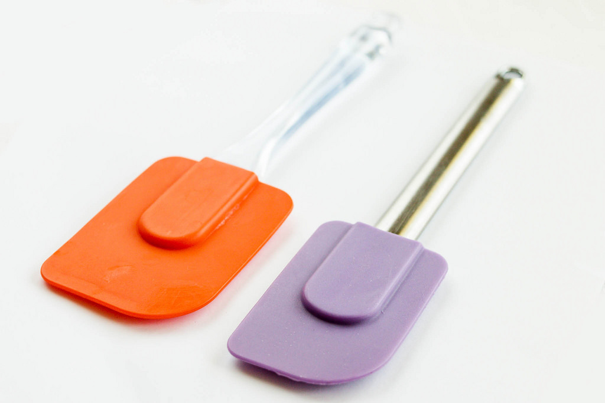

A bundt cake pan is used to create a ring shaped cake. The shape is inspired by a traditional European cake known as Gugelhupf.
Cookie Scoop
A cookie scoop is about the size of a dinner spoon. The stainless steel scoop is used to make perfect cookie balls.
Cookie Cutter
Cookie cutters have sharp edges for cutting cookie dough into a shapes for decoratind.
Pastry Brush
Use the pastry brush to spread butter, oil or glaze on food.Brushes can be of natural fiber or silicone.
Muffin Pan
A muffin pan is a mold in which muffins or cupcakes are baked. A single cup within a regular muffin tin is 3 1⁄2 ounces and most often has room for 12 muffins.
Mixing Bowls
Mixing bowls are deep bowls that are great for mixing ingreadients. Bowls are made in glass, ceramic, plastic, and stainless steel and are often sold in sets of three or more.
Spatulas
Spatulas are often made of silicone, resembling a knife with a broad flexible blade that is used mostly for spreading or mixing soft substances. The long handle and wide blades are used for scraping batter from bowls or for lifting and flipping food.
Cooling Rack
Cooling racks are made from a tight grid of metal wire that allows air to circulate freely to cool baked goods, and to prevent them getting soggy from condensation.
Loaf Pan
A loaf pan is a long deep pan or dish used for baking bread or cake.

 Bundt Cake Pan
Bundt Cake Pan Cookie Scoop
Cookie Scoop Cookie Cutter
Cookie Cutter Pastry Brush
Pastry Brush Muffin Pan
Muffin Pan Mixing Bowls
Mixing Bowls Cooling Rack
Cooling Rack Loaf Pan
Loaf Pan